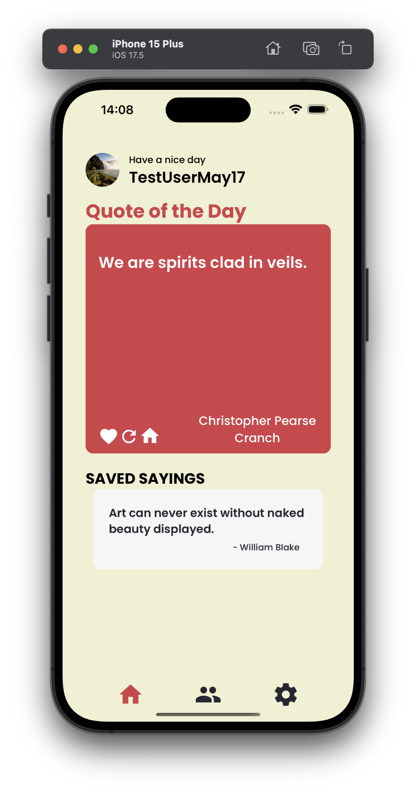
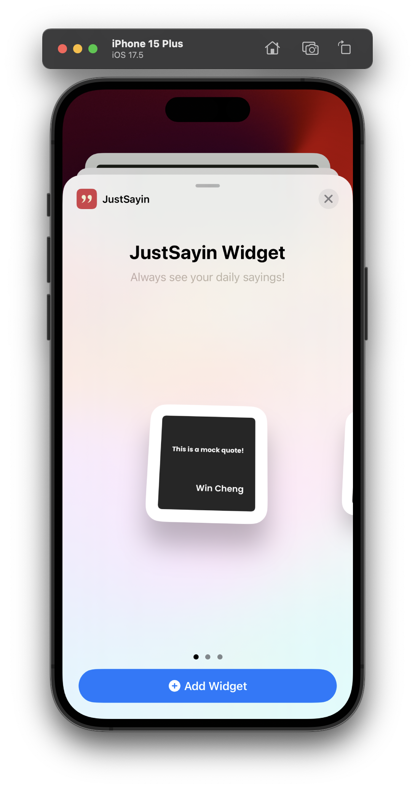
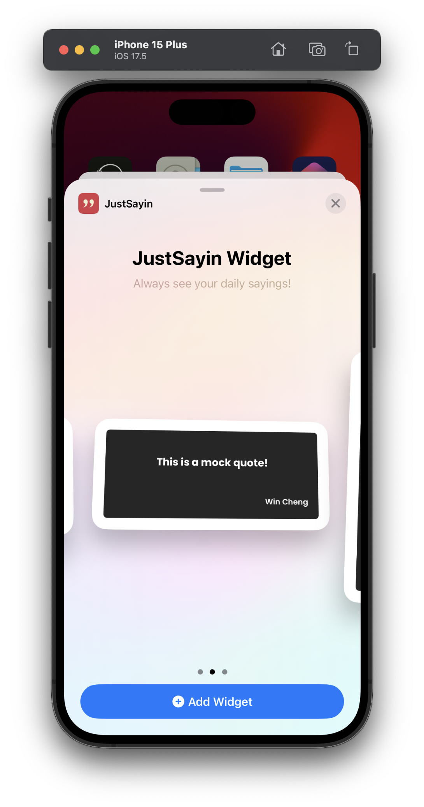

Setting Up the JustSayin Widget on Your Home Screen
The JustSayin widget is a convenient way to display daily quotes directly on your iOS device's home screen. Follow these steps to set up the JustSayin widget and start receiving inspirational quotes every day without even opening the app.
Steps to Set Up the Widget
Enable Notifications:
- Open the JustSayin app.
- Tap on the home icon on the main page. Upon first-time setup, you will receive a prompt asking if "JustSayin Would Like to Send You Notifications."
- Tap 'Allow' to enable notifications for daily quotes. This will ensure that you are alerted when new quotes are available.

Adding the Widget:
- Go to your iOS home screen and hold down in an empty area until the apps start to jiggle, indicating that you are in edit mode.
- Tap the plus (+) icon at the top left of the screen to open the widget gallery.
Search for the JustSayin Widget:
- In the widget gallery, use the search bar at the top and type in "JustSayin" to find the widget.
- Select the JustSayin widget from the search results.
Choose Widget Size:
- JustSayin may offer different widget sizes (small, medium, or large). Choose the size that best fits your screen layout!

- Tap 'Add Widget' after selecting your preferred size.
- JustSayin may offer different widget sizes (small, medium, or large). Choose the size that best fits your screen layout!
Place the Widget on Your Home Screen:
- After adding the widget, drag it to your desired location on the home screen.
- Tap 'Done' in the top right corner to exit edit mode.
Tips for Using the Widget
- Personalize Settings: You can further customize the widget settings by long-pressing on the widget and selecting 'Edit Widget'. This includes choosing which categories of quotes to display if the ios supports such customization.
- Notification Preferences: Manage notifications through your device's settings to adjust sounds, banners, and alerts for JustSayin, ensuring you receive your daily dose of inspiration as per your convenience.
Setting up the JustSayin widget on your home screen is a simple way to ensure that your daily quotes are always just a glance away, enriching your day with little nuggets of wisdom and inspiration.